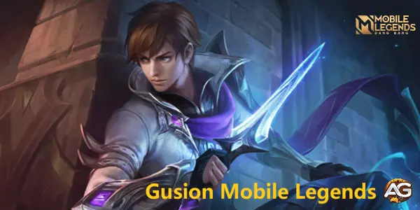

Master Gusion in Mobile Legends! Learn strategies to harness his agility, burst damage, and skill combos, ensuring optimal gameplay with this versatile assassin/mage hero.

Illustration of Gusion, a character from the game Mobile Legends, developed by Moonton.
Main Characteristics
Details
Function:
Assassin
Attributes:
Burst, Magic Damage
Position on Lane:
Jungle
Difficulty to Play:
Very Hard
Win Rate:
46,37%
Popularity:
0.57%
Ban Rate:
0.73%
2024 Gusion Lane Tier List
Rank
Jugle Tier List:
A+
EXP Tier List:
B
Mastering Gusion: Key Tactics for Dominating Mobile Legends
In Mobile Legends, Gusion shines as an unstoppable dynamo of agility and lethal burst damage. Embodying the quintessence of the assassin class, his toolkit consists of manoeuvres that enable him to leap into the heart of the fray and slip away just as swiftly, all the while raining devastating blows on his foes.
A tried and true pro tip worth employing: if you discern an adversary absent from the map, strategically use Gusion's skill 1 (Sword Spike). Direct this skill into the undergrowth; your invisible adversary could be concealed there, biding their time to strike when you least expect it.
Another tactic to utilize to your advantage is cooperative gameplay. Heroes in your team such as Chou, Kaja, and Minotaur are well suited for orchestrating ambushes on unsuspecting foes. With their distinct abilities that synergize well with Gusion, you can execute effective, unpredictable assaults.
However, not all assaults yield positive outcomes. A word of caution: resist the urge to attack while under enemy turrets, especially when crowd control (CC) heroes like Chou, Helcurt, Nana, etc., are in the vicinity. Their CC abilities can restrict your mobility, making you an easy target.
Formulating a stealth strategy can significantly enhance your playstyle with Gusion. By concealing yourself in the flora and patiently waiting for the moment when your enemies come within reach, you can pounce and unleash a full-on assault with all 5 of your lethal daggers at once.
Gusion Game-time Tactics:
Pre-Growth Stage: This is the phase of gathering and growth. Gusion's objective, at this point, should focus on accruing gold and experience. This foundational advancement, combined with opportunistic harassment of the adversary's laner, plants the seeds for your eventual dominance.
Mid-Growth Stage: This is a phase of expansion and assistance. Gusion should constantly scan the battlefield for opportunities to roam, support allied lanes, and take part in group clashes at this juncture.
Peak Gameplay: In the culminating phase of the game, Gusion's strategy should predominantly involve his impressive dexterity and surgical precision. Using his innate mobility to stay unscathed in the midst of team fights, he can dish out damage, all while maintaining a safe distance from the chaos.
This comprehensive guide filled with handy protocols, deadly combat techniques, and smart strategies is designed to take your Gusion gameplay to the next level. Unleash your full potential and make your mark on the Mobile Legends battlefield!
Guide to Gusion's Abilities in Mobile Legends Bang Bang
Overview
Gusion is an assassin/mage hero known for his incredible burst damage and high mobility. He excels at quickly eliminating squishy targets and escaping before the enemy can react. Mastering his abilities requires quick reflexes and precise timing.
Abilities Breakdown
1. Passive: Dagger Specialist
Description: Every time Gusion casts a skill, he gains a rune. After accumulating three runes, his next basic attack will deal additional magic damage and restore HP.
Analysis:
This passive encourages a playstyle that combines skill casts with basic attacks.
The HP restoration provides sustain in fights, allowing Gusion to stay in combat longer.
Prioritize building stacks before engaging to maximize burst damage potential.
2. Skill 1: Sword Spike
Description: Gusion throws a dagger in a target direction, dealing magic damage to the first enemy hit. Recasting the skill teleports Gusion to the target, dealing additional magic damage.
Analysis:
Use this skill to initiate fights or catch fleeing enemies.
The teleport function can be used to quickly reposition, escape danger, or close gaps.
It's a versatile skill for both offensive and defensive maneuvers.
3. Skill 2: Shadowblade Slaughter
Description: Gusion throws five daggers forward, each dealing magic damage. He can recall the daggers to his current location, dealing damage to enemies they pass through on their way back.
Analysis:
This skill is the core of Gusion’s burst damage, capable of hitting multiple targets.
Effective use requires aiming to maximize the number of hits on a single target.
Combine with other skills for devastating combos.
4. Ultimate: Incandescence
Description: Gusion dashes in a target direction, refreshing the cooldowns of his first two skills. He can dash again within a short period.
Analysis:
This ultimate provides high mobility and resets, allowing for complex combos.
Use the double dash to weave in and out of fights, dodging abilities while dealing damage.
Refreshing cooldowns means you can throw more daggers and teleport multiple times, maximizing your burst damage.
Gusion's in Mobile Legends: Pros and Cons
Pros:
High Burst Damage: Can quickly eliminate squishy targets.
Excellent Mobility: Skills allow for quick dashes and repositioning.
Skill 1 (Sword Spike): Dash again to reposition or follow up.
Skill 2 (Shadowblade Slaughter): Throw daggers once more.
AA (Auto Attack): Finish with a basic attack.
Tips for Mastering Gusion's Combos:
Practice Timing: Perfect your timing between skills to maximize damage output.
Positioning: Position yourself carefully to ensure you hit all your daggers.
Cooldown Management: Utilize Gusion's ultimate to reset cooldowns for continuous damage.
Awareness: Be aware of your surroundings and enemy positioning to avoid being caught out of position.
Target Priority: Focus on squishy targets for Combo 1 and Combo 3, and use Combo 2 for tanky enemies.
By mastering these combos and tips, you can become a formidable Gusion player in Mobile Legends.
Best Global Build for Gusion in Mobile Legends
Boots of the Arcane Boots
Stats: +40 Movement Speed, +20 Magic Power
Analysis: This item provides Gusion with speed and a useful Magic Penetration boost, improving his ability to chase down enemies and escape dangerous situations.
Genius Wand
Stats: +75 Magic Power, +5% Movement Speed, +15 Magic Penetration
Unique Passive - Magic: Decreases the target's Magic Defense by 3-10 (scaling with level) for 2 seconds (up to 3 stacks).
Analysis: The Genius Wand's Magic Penetration and passive make it easier for Gusion to burst down enemies, especially those with high magic resistance.
Holy Crystal
Stats: +100 Magic Power
Unique Passive - Mystery: Increases Magic Attack by 21-35% (scaling with level).
Analysis: Holy Crystal significantly boosts Gusion's magic power, amplifying the damage of his skills. It's an essential item for maximizing burst potential.
Unique Passive - Resonate: Every 6 seconds, the next skill will deal extra magic damage equal to 20-1000 (scaling with max mana) to up to 3 enemies.
Analysis: Lightning Truncheon's passive synergizes well with Gusion's ability to hit multiple targets, providing additional burst damage in team fights.
Divine Glaive
Stats: +65 Magic Power
Unique Passive - Spellbreaker: Increases Magic Penetration by 35%. When HP is above 70%, the unique bonus effect is increased by 30%.
Analysis: Divine Glaive is crucial for cutting through enemy magic resistance, ensuring Gusion's damage remains effective even against high-resistance targets.
Blood Wings
Stats: +90 Magic Power, +800 Shield
Unique Passive - Guard: Adds a shield equal to 100% of Magic Power.
Analysis: Blood Wings not only provides a massive boost to Gusion's magic power but also grants a significant shield, increasing his survivability during fights.
Overall Analysis
This build optimizes Gusion's burst potential and survivability, allowing him to effectively eliminate key targets while maintaining enough resilience to stay alive during engagements. The combination of magic power, penetration, cooldown reduction, and additional effects like slowing and shielding make this build ideal for both early and late-game scenarios.
Tips for Using This Build
Engage with Caution: Use your mobility and crowd control to engage or disengage from fights safely.
Focus on Squishy Targets: Prioritize eliminating enemy damage dealers and supports to tilt fights in your favor.
Maximize Passive Effects: Ensure you take full advantage of the passive effects of your items, particularly the Lightning Truncheon and Genius Wand.
Adapt as Needed: While this build is highly effective, always be prepared to adapt based on the specific circumstances of your match. If the enemy team is stacking magic resistance, consider incorporating other items that provide additional penetration or utility.
By following this build and strategy, you can dominate the battlefield as Gusion, delivering powerful bursts and outplaying your opponents with precision and skill.
Gusion with Emblem and Build Top Global 2024, Mobile Legends.
Analysis of the Top Global Emblem for Gusion in Mobile Legends
Emblem Setup: Custom Assassin Emblem
Talent Selection:
Rupture
Effect: Provides additional physical penetration.
Analysis: Although Gusion primarily deals magic damage, Rupture is chosen for its ability to increase the effectiveness of his auto attacks and skill combos, especially during the early game when magic penetration is limited. The extra physical penetration can help secure kills on squishier targets.
Seasoned Hunter
Effect: Increases damage dealt to jungle monsters and provides extra gold for each jungle monster killed.
Analysis: Seasoned Hunter significantly boosts Gusion’s farming efficiency, allowing him to clear jungle camps faster and gain gold more quickly. This enables him to reach his core items sooner and maintain an advantage over his opponents.
Lethal Ignition
Effect: Deals extra magic damage to enemies when their HP falls below a certain threshold.
Analysis: Lethal Ignition complements Gusion’s burst damage playstyle. When combined with his high burst potential, this talent ensures that enemies are finished off efficiently once their health drops low enough, making it harder for them to escape with low HP.
Battle Spell: Hunter
Effect: Deals damage to jungle monsters and restores HP and mana.
Analysis: Hunter is a critical spell for Gusion as it enhances his jungle clearing speed and sustainability. The HP and mana restoration from Hunter keeps Gusion healthy and ready for continuous aggression or rotations without needing to recall frequently.
Overall Analysis
Advantages:
Early Game Dominance: The Custom Assassin Emblem setup with Rupture and Seasoned Hunter ensures that Gusion has a strong early game presence. Faster jungle clearing and extra gold accumulation help him secure his core items quickly.
Burst Damage Enhancement: Lethal Ignition synergizes perfectly with Gusion’s kit, ensuring that his combo finishes off enemies who are critically low on health.
Sustainability: The Hunter battle spell maintains Gusion's HP and mana during jungle rotations, allowing for extended periods of farming and ganking without needing to return to base.
Tips for Using This Setup
Efficient Farming: Prioritize clearing jungle camps quickly using Seasoned Hunter and Hunter to stay ahead in levels and gold.
Aggressive Playstyle: Take advantage of Gusion’s early game power spike by securing kills and exerting pressure on lanes. Use Rupture and Lethal Ignition to maximize your burst potential.
Objective Control: Utilize your fast jungle clearing to control objectives like the Turtle and Lord. The extra gold from Seasoned Hunter can give your team a significant advantage in securing these objectives.
Positioning: As an assassin, positioning is key. Use the mobility from your skills to dodge incoming damage and reposition yourself for optimal burst damage.
By mastering this emblem setup and incorporating these strategies, you can elevate your performance with Gusion and dominate your games in Mobile Legends.
Gusion Guide Conclusion
Mastering Gusion in Mobile Legends requires a deep understanding of his combos, optimal item build, and emblem setup. Utilizing the standard burst, anti-tank, and advanced burst combos allows you to adapt to different in-game situations, maximizing your effectiveness. The best global build, featuring Boots of the Ice Hunter, Genius Wand, Holy Crystal, Lightning Truncheon, Divine Glaive, and Blood Wings, enhances Gusion’s burst potential and survivability.
Complementing this with the Custom Assassin Emblem setup, including talents like Rupture, Seasoned Hunter, and Lethal Ignition, along with the Hunter battle spell, ensures efficient farming, sustained aggression, and unparalleled burst damage. By integrating these elements, you can dominate the battlefield, swiftly eliminating key targets and maintaining a strategic advantage throughout the game.
Did you like our Gusion Guide? Is there something you didn't understand or would like to suggest changes to? We invite you to join our comment section on the Alexandre Games Blog page. Feel free to express your opinion, clarify your doubts, and share your suggestions. Click the button below to get started:

 Floryn
Floryn